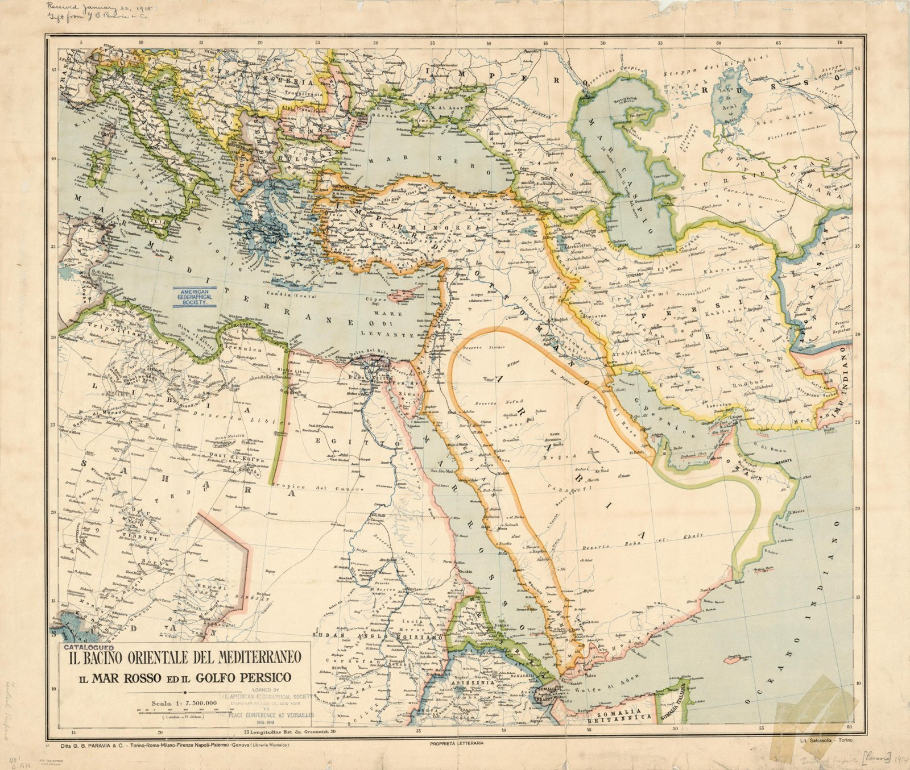

Thesis
The Central Argument
Question
Most important theme in US-Middle East relations between 1776-2001, why your theme is the most important theme, and how that theme played out over that period.
Theme
Idealism vs. Self Interest - American Leaders struggled between promoting declared principles and protecting national interests
Thesis
The tension between idealism and realism is the most significant theme in the relationship between the U.S. and the Middle East in the period from 1776 to 2001 because the theme spans all eras irrespective of the political and economic environment. Even though certain periods had specific influences on America’s foreign policy, including oil, the Cold War politics, religion, and regional nationalism, the theme of conflicting ideals and interests was still present at all times. Americans believed in certain ideals that included freedom, independence, and sovereignty, and yet the decisions made had to do with economic benefit, national security, and military considerations.
Introduction
While the US has considered itself to be a country of freedom, independence and self-governance since its establishment in 1776, there are also practical reasons why the US has involved itself in Middle Eastern affairs, such as trade, oil, security, and political connections. As the nation evolved from an independent republic to become a superpower, its interests in this region have grown more complicated. Through a chronology of key events between 1776 and 2001, this website considers the efforts that American policymakers made in trying to balance their country’s ideology and interests. It reveals instances of when these principles were kept, compromised or strengthened through practical considerations, illustrating the interplay of idealism and self-interest for 225 years.

About This Exhibit
The history of the U.S.-Middle East relations from 1776 to 2001 is presented on this website via a chronological online exhibit. The reason for choosing this particular approach was that the use of a chronological framework would make it possible for users to trace the evolution of American foreign policy during various historical eras and at the same time compare how the relationship between American ideology and American interests evolved. By means of historical photographs, primary sources, chronology, and comparison of events, users will be able to see when American ideology coincided with American interests and when the former contradicted the latter.
1Central historical problem
Sovereignty concerns a state's authority over its territory and affairs. Self-determination concerns a people's ability to determine its political future. Democracy concerns accountable, participatory government inside a state. These overlap but are not interchangeable.
Defending Kuwait against Iraqi occupation defended territorial sovereignty without establishing a democracy in Kuwait. In Iran in 1953, U.S. intervention affected internal political authority rather than reversing a foreign invasion. In the struggle over Israel and Palestine, competing national movements asserted claims to political self-determination over overlapping territories.